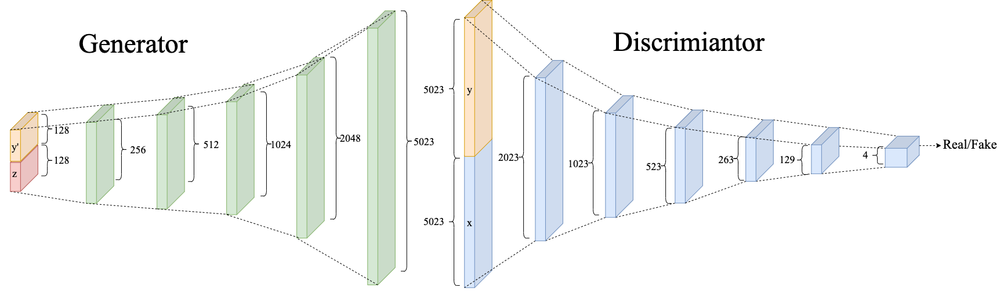
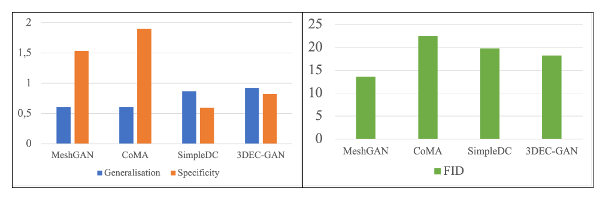

3D Expression Conditional GAN (3DEC-GAN)
Introduction
With the goal of producing a GAN which can generate unique 3D faces while providing some degree of control over the output, 3DEC-GAN was designed and implemented. The approach taken was to extend a GAN which is capable of generating 3D faces by adding control in the form of class condtioning. This way label information can be used to apply a broad constraint over the output sample. In this case each class corresponded to an expression, leaving the identity of the face as randomly generated.
Design
3DEC-GAN is the extension of the Simple DC GAN which produced arbitrary 3D faces as point clouds with 5023 vertices. It does this using 1D convolutional layers along a list of points in 3D space. The number and size of the hidden layers was determined through hyperparameter tuning. Subsequently, 3DEC-GAN was formed by adding conditional information vectors - which encode label data - onto the input of the generator and the discriminator. The expressions learned were: Neutral, Mouth Open. Bare Teeth and Cheeks In. The final design can be seen in the image below where z is a noise vector, x is an input point cloud and y and y' are condtional information vectors.
Evaluation
3DEC-GAN was evaluated using a quantitative approach where metrics were calculated using output from the generator and a testing set of real data. The results were then compared against the Simple DC GAN, in addtion to MeshGAN and CoMA, the leading models for 3D face generation and 3DEC-GANs competitors. The metrics were chosen to match the evaluation of MeshGAN, such that a comparison could be made, these being Generalisation, Specificity and FID. Generalisation and Specificity use Euclidian distance in 3D space to compare how alike two faces are and subsequently probe the generator's latent space by comparing against real samples. FID on the otherhand, is an image based metric inherited from GANs for image generation and was used by rasterising the 3D faces into images to be compared. The results can be seen in the graphs below.
Lastly, a brief qualitative inspection was perfromed on the generated samples. The results of which can be seen below.

Conclusion
It can be seen from the quantitative results that 3DEC-GAN prefromed well compared to MeshGAN, CoMA and the Simple DC GAN. However, for various reasons the qualitative inspection shows that the output samples are far too noisy and disfigured to be usable. The shows that the model has some significant shortcommings. However, despite the fact that the model has failed in reaching its goal of being usable, it still stands as a strong base from which to investigate more complex architectures.